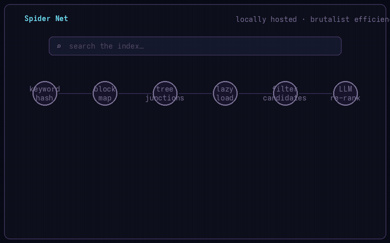

A web routing engine that directs you to relevant sites without hoarding the full text of the internet. Brutalist efficiency: block-compressed inverted index, hierarchical semantic routing, local LLM re-ranking.

Naive breadth-first crawling burns bandwidth on noise. Spider Net scores before it fetches:
The index keeps pointers, not paragraphs. Data blocks are compressed (.tar.zst) and lazy-loaded into RAM only when a query touches them; hierarchical tree junctions prune the candidate space before anything decompresses.
| Port | Service | What it does |
|---|---|---|
| 9400 | Search API | Keyword hash → block mapping → tree junction check → lazy load → filter → optional LLM re-rank → top N. |
| 9401 | Frontend | Minimalist Google-style search UI with auto-suggestions. |
| 9402 | Crawler API | Start/stop/status/flush for the bounded spider; document inspection. |
| 9403 | Dashboard | Real-time stats, crawl controls, system health. |
| 9404 | Reranker API | Local 3B LLM (llama.cpp) semantic re-ranking of top candidates. |
| — | Spider Chat | LLM chat over the index + scraped corpus (RAG), multi-conversation. |
./scripts/start.sh start builds and health-checks the container; a systemd watchdog keeps it alive across boots and reboots.
Embedding-based relevance scoring on candidates the lexical index already narrowed — precision without paying GPU prices at query time.
No cloud dependency, no query logging by strangers. The whole stack runs on a machine you can point at.